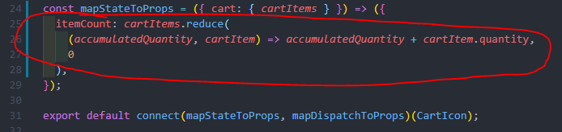
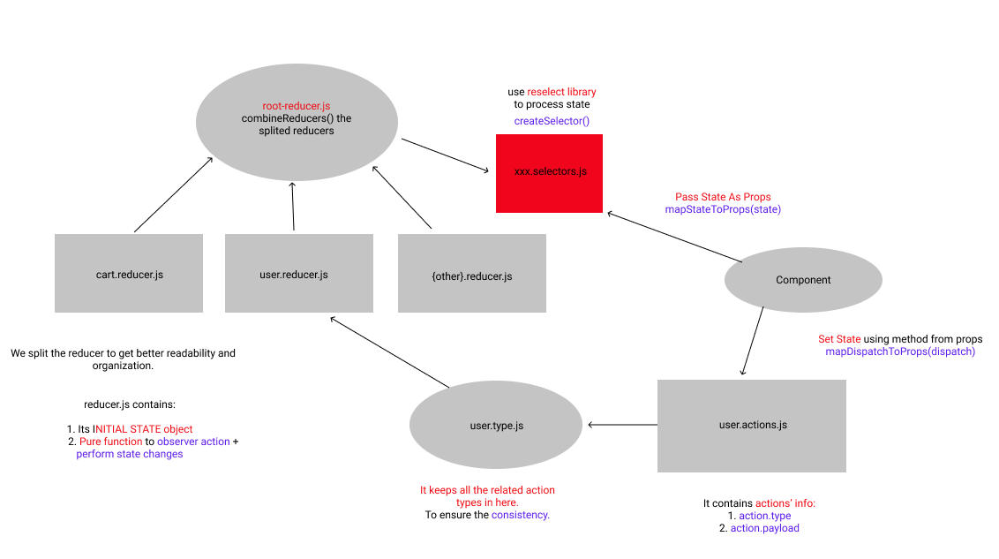
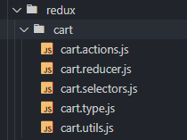
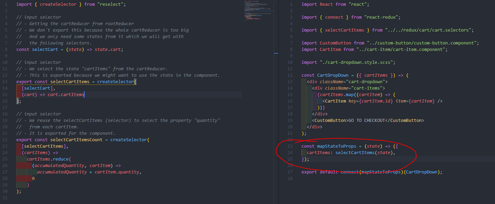

Reselect Library
Why do we need reselect?
- Concerns are not seperated: Client side calculations could live in the component - mapStateToProps etc.
- Client side calculations is not well organized and reusable enough.
- Unnecessary Rerendering
1. Process state before outputing
2. Not well organized and reusable
What does reselect do?
⭐Reselect library organizes our states and makes our code reusable + consistent and gives us a space to process the data before outputing them to the components.
Set up reselect
⭐Add xxx.selectors.js
LEFT: xxx.selectors.js
RIGHT: Component